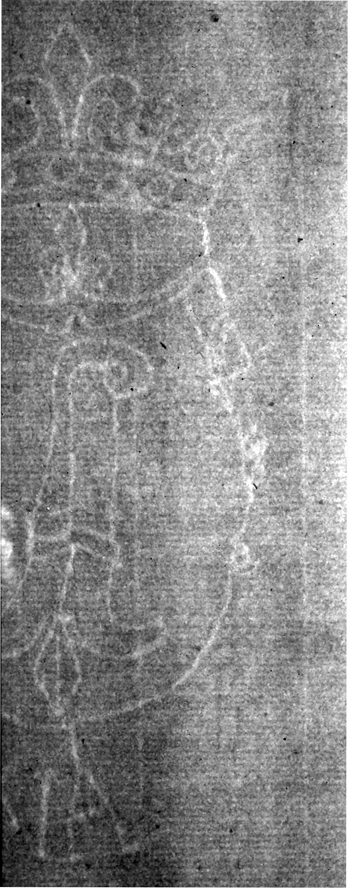

User's image to be matched
Basel Crosier
See branch diagram↩ Back one step ↻ Restart this branch
Your watermark is Basel Crosier, C.a.a.
Watermark C.a.a. can be distinguished by several features: there is a fleur-de-lis in the arch below the crown, the crown is double banded and the top band contains jewels, and the initials VA or AV can be found below the shield.
________________________________________________________________________
This watermark can be found on the following prints:
- The good Samaritan, 1633, (B.90 ii/ NHD 116 ii), Rijksprentenkabinet, Amsterdam (RPK OB.162). Uncut broadsheet.
- The good Samaritan, 1633, (B.90 ii/ NHD 116 ii), Edmond de Rothschild Collection, Paris (EdRC 2390 L.R.). Uncut broadsheet.
- The good Samaritan, 1633, (B.90 iii/ NHD 116 iii), Hermitage Museum, St Petersburg (HMP 235076). Uncut broadsheet.
(Erik Hinterding, Rembrandt as an Etcher, 2006, II, 63)
